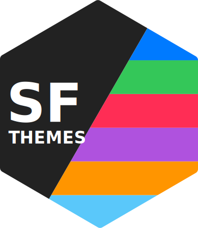

Changelog
Source:NEWS.md
sfthemes 0.2.0
New
- A new function,
sf_set_custom_font(), can be used to apply a custom font on all elements and fonts of anyggplot2::themes() - Inter Light and Extra Bold are now included in the package
Changed
- Both themes are now accepting fewer parameters, and therefore are easier to use.
- A new
font_familyparameters of the themes can be used to set the entire font family of the theme.- Note that not all fonts will look great with sfthemes, and minor glitches is expected with custom fonts. Make sure to inspect your theme with a custom font before publishing it.
- The
scaleparameter is now calledsize_class-
font_size_scale→font_size_class -
element_size_scale→element_size_class
-
Fixed
-
sf_set_inter()is now working, and it can be used to change other theme’s font and family as well
sfthemes 0.1.0
- This is the initial release of the sfthemes package. This version offers two main themes,
theme_sf_light()andtheme_sf_dark()alongside 9 different color palettes, each offering a complementary accessible variant. Inter is set as the default typeface of the package while we resolve some issues around full integration of SF Pro.
Known Bugs
-
sf_set_sf_pro()andsf_set_inter()are not working as intended - SF Pro cannot be set correctly due to
extrafontonly importing.ttffiles, therefore, missing some of the weights.